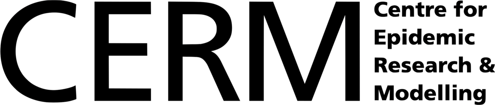

install.packages(c("odin", "pkgbuild", "pkgload"))Coding compartmental models with R and odin
Session B3
Welcome
This short course teaches you how to code compartmental models in R using odin. All models are written in odin’s modelling language and compiled to C, so odin is the only modelling package you need.
What you will learn
By the end of the session you will be able to:
- Write a compartmental model (SIR) in odin’s language
- Compile, run and plot a model from R
- Change parameters and run scenarios
- Extend a model with a latent period (SEIR), births and deaths, and time-varying parameters
Session plan
| Topic | Material |
|---|---|
| B3_1: odin basics & the SIR model | 1 B3_1: odin basics & the SIR model |
| B3_2: extending models — SEIR, demography, time-varying parameters | 2 B3_2: Extending models — SEIR, demography & time-varying parameters |
Slide decks for presenting: B3_1 slides · B3_2 slides
Each lecture includes short exercises. Solutions are hidden in collapsible blocks, so try the exercise before looking.
Setup
You need R (≥ 4.1) and a working C compiler:
- macOS: install the Command Line Tools with
xcode-select --install - Windows: install Rtools
- Linux:
gccis usually already present
Then install the packages from CRAN — odin plus its compile-time helpers:
Check that odin can compile models on your machine (this compiles a small test model, so it verifies your whole toolchain):
odin::can_compile()
#> [1] TRUEAll plotting in the course uses base R, so these are the only packages you need to install. During the session, work in a fresh project (File → New Project) with a new R script and paste the code chunks there as we go.
A note on odin versions
This course teaches odin version 1 (install.packages("odin")), the stable release on CRAN. A rewrite, odin2, is in development and will eventually replace odin on CRAN. The modelling concepts carry over directly; the main syntax differences are that odin2 uses parameter() instead of user() and simulates through the companion package dust2. Everything in this course runs on odin v1.
Instructor: Swapnil Mishra (Asst. Professor)
